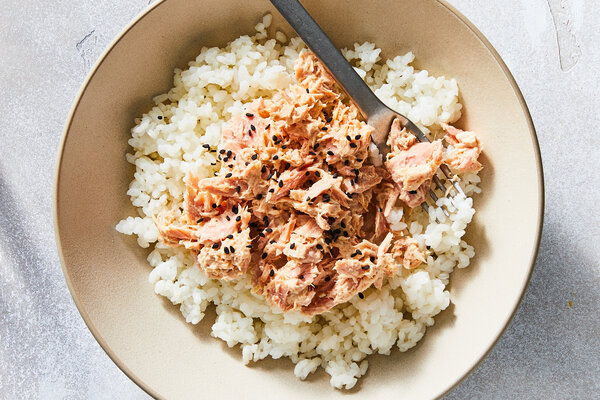

Rice and Tuna

Fast rice and tuna dish
This is a fast, tasty and healthy recipe of a simple dish you can
have without deep coocking skills.
Ingredients
- tuna
- onion
- rice
- spices and seasonings
- butter
Steps
- Fry the onion: Cut it into little pieces and fry on a medium heat in the
butter till it crispy.
- Cook the tuna: Just add your tuna to the onion and sprinkle it with
seasonings
- Cook the rice: Heat to the boiling, add rice, cover it and let it simmer
at the low heat for 18-20 minutes.
- Assemble the dish: Just mix tuna with rice in a bowl and add some butter
to your taste.
Homepage